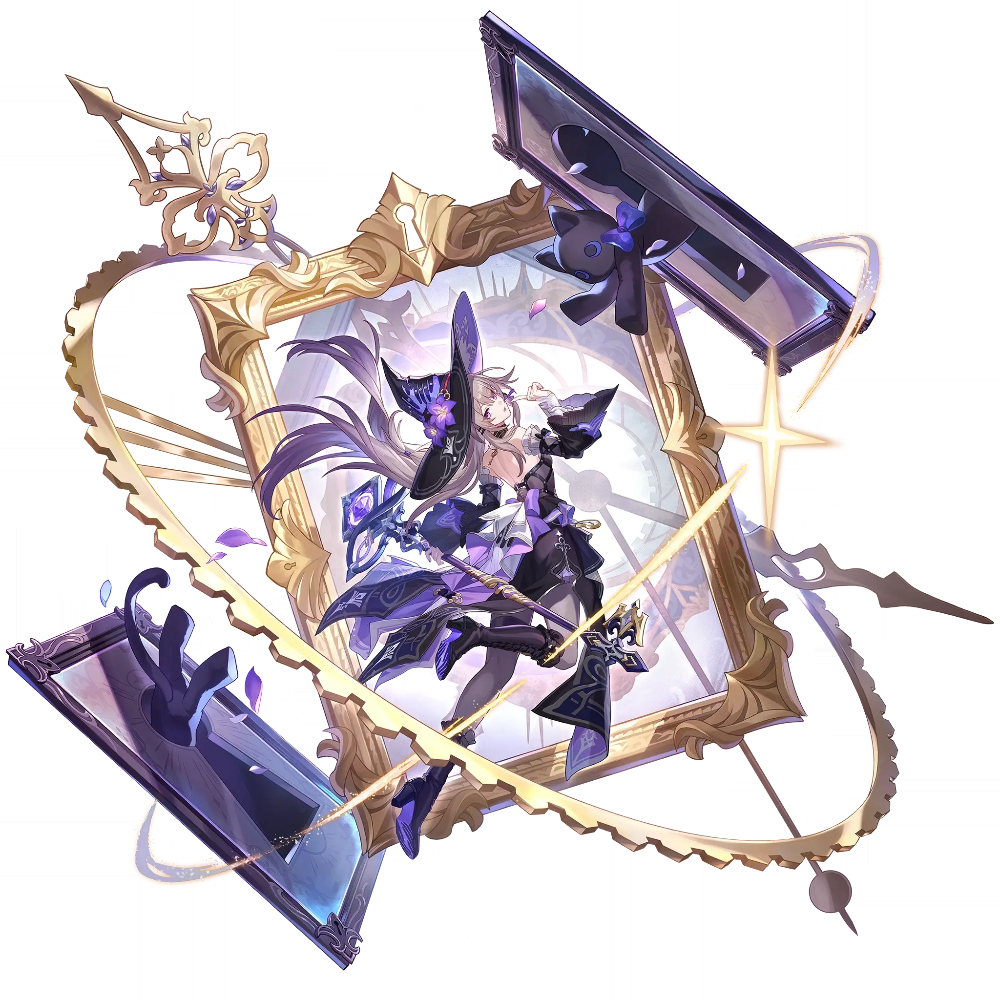

The Herta
Best The Herta build guide for Honkai Star Rail. See The Herta's best Relics, Light Cones, teams, Eidolons, Trace priority, and how to play The Herta.
🔍 Detail Skill
Semua skill aktif dan pasif beserta efeknya.
Deals Ice DMG equal to #1[i]% of The Herta's ATK to one designated enemy.
Deals Ice DMG equal to #1[i]% of The Herta's ATK to one designated enemy, and inflicts 1 stack(s) of "Interpretation." Deals Ice DMG equal to 70% of The Herta's ATK to the targets hit by this instance of Skill and their respective adjacent targets. This effect can repeat 2 times.
Consumes 1 stack of "Inspiration." Deals Ice DMG equal to #1[i]% of The Herta's ATK to one designated enemy and inflicts 1 stack(s) of "Interpretation." Deals Ice DMG equal to #1[i]% of The Herta's ATK to the target hit by this instance of Skill and adjacent targets, repeating 2 times. Finally, deals Ice DMG equal to #2[i]% of The Herta's ATK to all enemies.
When enemy targets enter battle, The Herta inflicts 1 stack of "Interpretation" on them. At the start of each wave, applies 25 stack(s) of "Interpretation" to a random enemy target, prioritizing Elite enemy targets or higher. When the Enhanced Skill's primary target has "Interpretation," the multiplier for the DMG dealt increases, with each stack granting an increase of #1[i]%/#2[i]% on the primar
After using Technique, The Herta's ATK increases by 60% at the start of the next battle, lasting for 2 turn(s). If there are Basic Treasures in this current map, using Technique will mark up to 3 Basic Treasures' locations. After entering battle by using Technique in Simulated Universe or Divergent Universe, deals True DMG equal to 99% of the target's Max HP to enemy targets lower than Elite-level
⚔ Light Cone Terbaik
Diurutkan dari yang paling kuat. Persentase menunjukkan performa relatif terhadap pilihan terbaik.
💎 Relic Set Terbaik
Set terbaik untuk karakter ini, diurutkan berdasarkan prioritas.
📊 Stat Utama
Stat yang dicari pada tiap slot.
👥 Tim yang Direkomendasikan
Karakter yang sering dipasangkan bersama The Herta.
 Serval
Serval
 Argenti
Argenti
 Tribbie
Tribbie
🔗 Lanjutkan
Build ini dirangkum dari Prydwen Institute. Starwise tidak menghitung sendiri. Angka bisa berubah setelah patch atau karakter baru rilis.